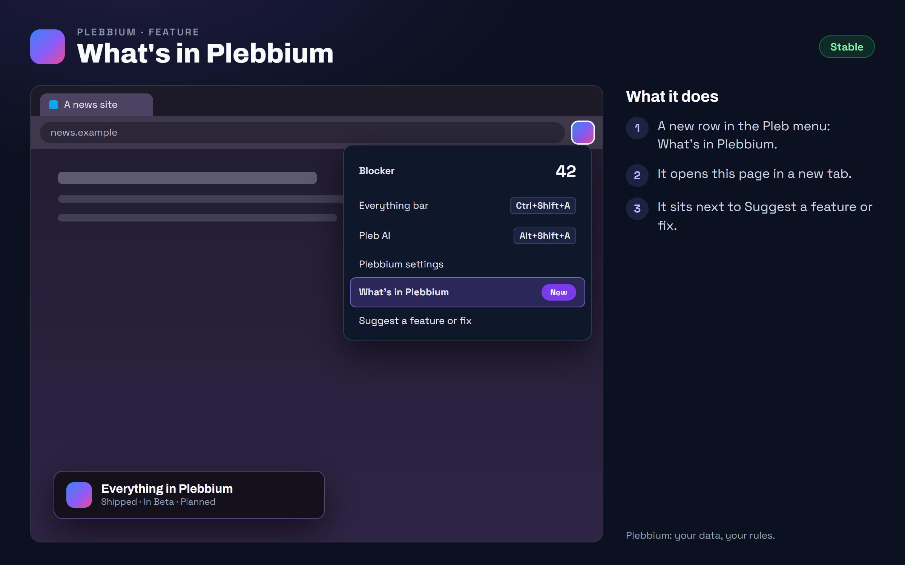

All features › Shipped › What's in Plebbium
What's in Plebbium
Stablesince features 0.7.3A What's in Plebbium row in the Pleb menu that opens this page, so every feature, and how to use it, is one click away.

How to use it
- Pleb button › What's in Plebbium.
When it arrived
Features 0.7.126 Oct 2026 · Beta and Stable
What's in Plebbium, in the Pleb menu.
Why it works this way
See what exists before asking
Seeing what is already there and asking for what isn't sit side by side in the menu.